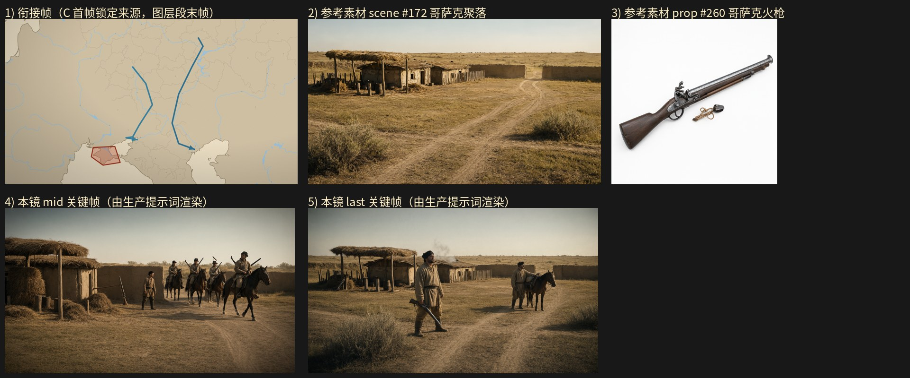

旁白：小叶则是活跃于伏尔加河、第聂伯河与顿河地区的哥萨克首领，靠劫掠定居城市, 村庄和商船为生。
设计卡预算：layer 5 s + gen 6.5 s；mid_frame_time（OLD）3.0 s
NEW 原地重写：关键帧任务墙钟 30.0s / 3 次调用 / 峰值提示词 67934 tokens / 完成 1570 tokens；视频任务墙钟 50.1s / 3 次调用 / 峰值提示词 69268 tokens / 完成 2937 tokens；保存 成功
NEW-scratch：关键帧任务墙钟 30.0s / 3 次调用 / 峰值提示词 65022 tokens / 完成 1528 tokens；视频任务墙钟 45.1s / 3 次调用 / 峰值提示词 67819 tokens / 完成 2520 tokens；保存 成功

（空）
@哥萨克聚落，午后偏黄的地面光，阳光自画面上方偏右强烈斜照，夯土地面被照得发亮，草色泛金黄，空气带薄尘雾，色调暖褐，16:9 横构图电影感剧照。中景平视固定机位，取 @哥萨克聚落 外围的夯土矮墙缺口与院内：画面左侧为土坯与木骨泥墙低矮房屋的墙面与草顶棚架，棚架下成捆干草与草料堆摞到齐腰高，房屋门前立着一根拴马桩；画面中部是踩实的夯土场与外围夯土矮墙的缺口，画面右侧是踩踏出的土路与后景一线低矮灌木与淡褐林影。夯土矮墙的缺口处，一队骑马的人（皮帽、粗呢短袍、腰束布带，共四人）正从土路上穿过缺口进入院内：为首一人端坐马背、双手握着缰绳搁在鞍前，双腿垂在马腹两侧、双脚踩在马镫上，肩背斜挎一支 @哥萨克火枪，枪身的火绳夹朝外、枪管斜指上方，马匹四腿跨步前行、马头朝向画面右侧；身后三骑依次成列，各自双手持缰、双腿垂在马腹两侧，其中第二骑肩背一支 @哥萨克火枪、枪口朝向身后。院内夯土场中央一名哥萨克男子（粗呢短袍、黑皮帽、腰束布带、及膝皮靴）双腿分开站稳、双手各垂在体侧，侧身朝向墙缺口处，抬头看向进院的骑队，眉头微压、嘴唇抿平。院墙根另有一支 @哥萨克火枪 斜靠在木栅立柱旁，枪管朝上、木质通条横插在枪身中段。午后强光把夯土墙与草顶染成暖橙，院内暗部沉入褐灰，人物与马匹完整入画。16:9 横构图电影感剧照，单帧静态画面
@哥萨克聚落，午后偏黄的地面光，阳光自画面上方偏右强烈斜照，夯土矮墙与木骨泥墙房屋受光泛暖褐，草顶棚架与干草泛金黄，空气带薄尘雾，色调暖褐，16:9 横构图电影感剧照。远景广角平视固定机位，取 @哥萨克聚落 的全景，构图分三层：前景为踩踏出的土路与几处低矮灌木，中景为外围夯土矮墙与木栅缺口、墙内的土坯与木骨泥墙房屋、草顶棚架、拴马桩与成捆草料堆，后景为开阔的干草原与地平线上的一线低矮灌木与淡褐林影，几座土屋的草顶上冒着细淡的炊烟。院内夯土场中央一名哥萨克男子（粗呢短袍、黑皮帽、腰束布带、及膝皮靴）身体略侧向镜头，右手提着一支 @哥萨克火枪 的枪托后段、枪管朝下斜指地面，枪身的火绳夹与横插的木质通条在他的腿侧清楚可见，左手自然垂在体侧，双腿分开站稳、两只皮靴踏在夯土地上可见，下颌微抬、目光望向画外右前方的草原。聚落外的土路上另一名哥萨克男子（同款粗呢短袍、黑皮帽、腰束布带）牵着一匹驮马停在路边，右手握着缰绳、左手按在驮马鞍侧的捆包上，双腿站定，马匹四腿立在土路面上、马头朝向画面右方。拴马桩旁堆着成捆干草与住户家当，墙根另有一支 @哥萨克火枪 斜靠在木栅立柱旁。聚落规模不大，房屋与棚架低矮成片，院落设施与人、马、火枪全部完整入画，画面平稳开阔、层次清晰。16:9 横构图电影感剧照，单帧静态画面
出场人物：无名哥萨克男子（营地住户与骑队）；场景：@哥萨克聚落；道具：@哥萨克火枪。 0-1秒：@哥萨克聚落，俯拍地图式全景，米黄底色上分布浅蓝细线水系与淡灰边界线，画面中部两条粗蓝折线自上方延伸至下方，左端带箭头指向左下红框区域，右端箭头指向右下浅色地块，左下红框内为浅褐多边形，右下与左上各有一块浅米色陆地轮廓，光线均匀无阴影，留白在四周，镜头极缓推近，画面无人。 1-4秒：@哥萨克聚落，切到聚落外围夯土矮墙缺口外的远景广角平视固定机位，前景为踩踏出的土路与几处低矮灌木，中景为外围夯土矮墙与木栅缺口、墙内土坯与木骨泥墙低矮房屋及草顶棚架、拴马桩与成捆草料堆，后景为开阔干草原与地平线上一线低矮灌木与淡褐林影；夯土矮墙缺口处，一队骑马的人（皮帽、粗呢短袍、腰束布带，共四人）正从土路上穿过缺口进入院内：为首一人端坐马背、双手握着缰绳搁在鞍前，双腿垂在马腹两侧、双脚踩在马镫上，肩背斜挎一支 @哥萨克火枪、火绳夹朝外、枪管斜指上方，马匹四腿跨步前行、马头朝向画面右侧；身后三骑依次成列，各自双手持缰、双腿垂在马腹两侧，第二骑肩背一支 @哥萨克火枪、枪口朝向身后，马匹四腿迈步；午后偏黄的地面光自画面上方偏右强烈斜照，草色泛金黄，空气带薄尘。 4-7秒：@哥萨克聚落，切到聚落院内中景平视固定机位，画面左侧是一座土坯与木骨泥墙低矮房屋的墙面与草顶棚架，棚架下成捆干草与草料堆摞到齐腰高，房屋门前立着一根拴马桩、桩上垂着一段麻绳，画面右侧是踩实的夯土场与一段外围木栅，后景为开阔干草原与一线低矮灌木；院内夯土场中央一名哥萨克男子（粗呢短袍、黑皮帽、腰束布带、及膝皮靴）双腿分开站稳、两只皮靴踏在夯土地上清晰可见，双手各垂在体侧，侧身朝向墙缺口处，抬头看向进院的骑队，眉骨压低、嘴唇抿平；夯土矮墙缺口处那四名骑马的人（皮帽、粗呢短袍、腰束布带）已全部进入院内，为首一人端坐马背、双手各握一段缰绳搁在鞍前、双脚踩在马镫上，肩背斜挎一支 @哥萨克火枪、火绳夹朝外、枪管斜指上方，马匹四腿立稳在夯土地上、马头朝向画面左侧，身后三骑依次排开、各自双手持缰，其中一人肩背一支 @哥萨克火枪、枪口朝向身后；院墙根的木栅立柱旁斜靠着一支 @哥萨克火枪，枪管朝上、木质通条横插在枪身中段；午后强光把夯土墙与草顶染成暖橙，院内暗部沉入褐灰。 7-9.5秒：@哥萨克聚落，切到院内的侧向中景平视固定机位，画面左侧为土屋草顶棚架与成捆干草，画面中部是踩实的夯土场，画面右侧是土路与聚落外的开阔干草原；聚落外的土路上另一名哥萨克男子（粗呢短袍、黑皮帽、腰束布带）牵着一匹驮马停在路边，右手握着缰绳、左手按在驮马鞍侧的捆包上，双腿站定，马匹四腿立在土路面上、马头朝向画面右方，鞍侧的捆包用粗麻绳扎紧；院内夯土场中央那名哥萨克男子（粗呢短袍、黑皮帽、腰束布带、及膝皮靴）双腿分开站稳、两只皮靴踏在夯土地上可见，右手提着一支 @哥萨克火枪 的枪托后段、枪管朝下斜指地面，火枪侧面的火绳夹与横插的木质通条在腿侧清楚可见，左手自然垂在体侧，偏头望向墙缺口方向，下颌微抬；院内草顶棚架下的成捆干草与草料垛码放整齐，几只木桶并排靠墙；午后偏黄的地面光照亮夯土场，土场暗部呈褐灰。 9.5-11.5秒：@哥萨克聚落，切回聚落全景远景广角平视固定机位，构图分三层：前景为踩踏出的土路与几处低矮灌木，中景为外围夯土矮墙与木栅缺口、墙内的土坯与木骨泥墙房屋、草顶棚架、拴马桩与成捆草料堆，后景为开阔的干草原与地平线上的一线低矮灌木与淡褐林影，几座土屋的草顶上冒着细淡的炊烟，聚落规模不大、房屋与棚架低矮成片；院内夯土场中央那名哥萨克男子（粗呢短袍、黑皮帽、腰束布带、及膝皮靴）身体略侧向镜头，右手提着 @哥萨克火枪 的枪托后段、枪管朝下斜指地面，火枪侧面的火绳夹与横插的木质通条在他的腿侧清楚可见，左手自然垂在体侧，双腿分开站稳、两只皮靴踏在夯土地上可见，下颌微抬、目光望向画外右前方的草原；聚落外的土路上另一名哥萨克男子（同款粗呢短袍、黑皮帽、腰束布带）牵着一匹驮马停在路边，右手握着缰绳、左手按在驮马鞍侧的捆包上，双腿站定，马匹四腿立在土路面上、马头朝向画面右方；拴马桩旁堆着成捆干草与住户家当，墙根另有一支 @哥萨克火枪 斜靠在木栅立柱旁、枪管朝上；午后偏黄的地面光把夯土矮墙与草顶棚架镀成暖褐，四周是开阔干草原，画面平稳开阔、层次清晰。
3.0 秒
（空）
@哥萨克聚落，午后偏黄的地面光，阳光自画面上方偏右强烈斜照，夯土地面被照得发亮，草色泛金黄，空气带薄尘雾，色调暖褐，16:9 横构图电影感剧照。中景平视固定机位，取 @哥萨克聚落 外围的夯土矮墙缺口与院内：画面左侧为土坯与木骨泥墙低矮房屋的墙面与草顶棚架，棚架下成捆干草与草料堆摞到齐腰高，房屋门前立着一根拴马桩；画面中部是踩实的夯土场与外围夯土矮墙的缺口，画面右侧是踩踏出的土路与后景一线低矮灌木与淡褐林影。夯土矮墙的缺口处，一队骑马的人（皮帽、粗呢短袍、腰束布带，共四人）正从土路上穿过缺口进入院内：为首一人端坐马背、双手握着缰绳搁在鞍前，双腿垂在马腹两侧、双脚踩在马镫上，肩背斜挎一支 @哥萨克火枪，枪身的火绳夹朝外、枪管斜指上方，马匹四腿跨步前行、马头朝向画面右侧；身后三骑依次成列，各自双手持缰、双腿垂在马腹两侧，其中第二骑肩背一支 @哥萨克火枪、枪口朝向身后。院内夯土场中央一名哥萨克男子（粗呢短袍、黑皮帽、腰束布带、及膝皮靴）双腿分开站稳、双手各垂在体侧，侧身朝向墙缺口处，抬头看向进院的骑队，眉头微压、嘴唇抿平。院墙根另有一支 @哥萨克火枪 斜靠在木栅立柱旁，枪管朝上、木质通条横插在枪身中段。午后强光把夯土墙与草顶染成暖橙，院内暗部沉入褐灰，人物与马匹完整入画。16:9 横构图电影感剧照，单帧静态画面
@哥萨克聚落，午后偏黄的地面光，阳光自画面上方偏右强烈斜照，夯土矮墙与木骨泥墙房屋受光泛暖褐，草顶棚架与干草泛金黄，空气带薄尘雾，色调暖褐，16:9 横构图电影感剧照。远景广角平视固定机位，取 @哥萨克聚落 的全景，构图分三层：前景为踩踏出的土路与几处低矮灌木，中景为外围夯土矮墙与木栅缺口、墙内的土坯与木骨泥墙房屋、草顶棚架、拴马桩与成捆草料堆，后景为开阔的干草原与地平线上的一线低矮灌木与淡褐林影，几座土屋的草顶上冒着细淡的炊烟。院内夯土场中央一名哥萨克男子（粗呢短袍、黑皮帽、腰束布带、及膝皮靴）身体略侧向镜头，右手提着一支 @哥萨克火枪 的枪托后段、枪管朝下斜指地面，枪身的火绳夹与横插的木质通条在他的腿侧清楚可见，左手自然垂在体侧，双腿分开站稳、两只皮靴踏在夯土地上可见，下颌微抬、目光望向画外右前方的草原。聚落外的土路上另一名哥萨克男子（同款粗呢短袍、黑皮帽、腰束布带）牵着一匹驮马停在路边，右手握着缰绳、左手按在驮马鞍侧的捆包上，双腿站定，马匹四腿立在土路面上、马头朝向画面右方。拴马桩旁堆着成捆干草与住户家当，墙根另有一支 @哥萨克火枪 斜靠在木栅立柱旁。聚落规模不大，房屋与棚架低矮成片，院落设施与人、马、火枪全部完整入画，画面平稳开阔、层次清晰。16:9 横构图电影感剧照，单帧静态画面
场景：@哥萨克聚落；道具：@哥萨克火枪。 0-1秒：@哥萨克聚落，俯拍地图式全景，米黄底色上分布浅蓝细线水系与淡灰边界线，画面中部两条粗蓝折线自上方延伸至下方，左端带箭头指向左下红框区域，右端箭头指向右下浅色地块，左下红框内为浅褐多边形，右下与左上各有一块浅米色陆地轮廓，光线均匀无阴影，留白在四周，镜头静止，画面无人。 1-3秒：@哥萨克聚落，切到聚落外围夯土矮墙缺口处的远景广角平视固定机位，前景为踩踏出的土路与几处低矮灌木，中景为外围夯土矮墙与木栅缺口、墙内土坯与木骨泥墙低矮房屋及草顶棚架、拴马桩与成捆草料堆，后景为开阔干草原与地平线上一线低矮灌木与淡褐林影；夯土矮墙缺口处，一队骑马的人（皮帽、粗呢短袍、腰束布带，共四人）正从土路上穿过缺口：为首一人端坐马背、双手握着缰绳搁在鞍前，双腿垂在马腹两侧、双脚踩在马镫上，肩背斜挎一支 @哥萨克火枪、火绳夹朝外、枪管斜指上方，马匹四腿跨步前行、马头朝向画面右侧；身后三骑依次成列，各自双手持缰、双腿垂在马腹两侧，第二骑肩背一支 @哥萨克火枪、枪口朝向身后，马匹四腿迈步；午后偏黄的地面光自画面上方偏右强烈斜照，草色泛金黄，空气带薄尘。 3-6秒：@哥萨克聚落，切到聚落院内中景平视固定机位，画面左侧是一座土坯与木骨泥墙低矮房屋的墙面与草顶棚架，棚架下成捆干草与草料堆摞到齐腰高，房屋门前立着一根拴马桩、桩上垂着一段麻绳，画面中部是踩实的夯土场与外围夯土矮墙的缺口，画面右侧是土路与后景一线低矮灌木；院内夯土场中央一名哥萨克男子（粗呢短袍、黑皮帽、腰束布带、及膝皮靴）双腿分开站稳、两只皮靴踏在夯土地上清晰可见，双手各垂在体侧，侧身朝向墙缺口处，抬头看向进院的骑队，眉骨压低、嘴唇抿平；夯土矮墙缺口处那四名骑马的人（皮帽、粗呢短袍、腰束布带）依次穿过缺口进入院内，为首一人端坐马背、双手各握一段缰绳搁在鞍前、双脚踩在马镫上，肩背斜挎一支 @哥萨克火枪、火绳夹朝外、枪管斜指上方，马匹四腿踏稳在夯土地上、马头朝向画面右侧，身后三骑依次排开、各自双手持缰，其中一人肩背一支 @哥萨克火枪、枪口朝向身后；院墙根的木栅立柱旁斜靠着一支 @哥萨克火枪，枪管朝上、木质通条横插在枪身中段；午后强光把夯土墙与草顶染成暖橙，院内暗部沉入褐灰。 6-9秒：@哥萨克聚落，切到院内的侧向中景平视固定机位，画面左侧为土屋草顶棚架与成捆干草，画面中部是踩实的夯土场，画面右侧是土路与聚落外的开阔干草原；聚落外的土路上另一名哥萨克男子（粗呢短袍、黑皮帽、腰束布带）牵着一匹驮马停在路边，右手握着缰绳、左手按在驮马鞍侧用粗麻绳扎紧的捆包上，双腿站定，马匹四腿立在土路面上、马头朝向画面右方；院内夯土场中央那名哥萨克男子（粗呢短袍、黑皮帽、腰束布带、及膝皮靴）双腿分开站稳、两只皮靴踏在夯土地上可见，右手提着一支 @哥萨克火枪 的枪托后段、枪管朝下斜指地面，火枪侧面的火绳夹与横插的木质通条在腿侧清楚可见，左手自然垂在体侧，偏头望向墙缺口方向，下颌微抬；院内草顶棚架下的成捆干草与草料垛码放整齐，几只木桶并排靠墙；午后偏黄的地面光照亮夯土场，土场暗部呈褐灰。 9-11.5秒：@哥萨克聚落，切回聚落全景远景广角平视固定机位，构图分三层：前景为踩踏出的土路与几处低矮灌木，中景为外围夯土矮墙与木栅缺口、墙内的土坯与木骨泥墙房屋、草顶棚架、拴马桩与成捆草料堆，后景为开阔的干草原与地平线上的一线低矮灌木与淡褐林影，几座土屋的草顶上冒着细淡的炊烟，聚落规模不大、房屋与棚架低矮成片；院内夯土场中央那名哥萨克男子（粗呢短袍、黑皮帽、腰束布带、及膝皮靴）身体略侧向镜头，右手提着 @哥萨克火枪 的枪托后段、枪管朝下斜指地面，火枪侧面的火绳夹与横插的木质通条在他的腿侧清楚可见，左手自然垂在体侧，双腿分开站稳、两只皮靴踏在夯土地上可见，下颌微抬、目光望向画外右前方的草原；聚落外的土路上另一名哥萨克男子（同款粗呢短袍、黑皮帽、腰束布带）牵着一匹驮马停在路边，右手握着缰绳、左手按在驮马鞍侧的捆包上，双腿站定，马匹四腿立在土路面上、马头朝向画面右方；拴马桩旁堆着成捆干草与住户家当，墙根另有一支 @哥萨克火枪 斜靠在木栅立柱旁、枪管朝上；午后偏黄的地面光把夯土矮墙与草顶棚架镀成暖褐，四周是开阔干草原，画面平稳开阔、层次清晰。
3.0 秒
（空）
@哥萨克聚落，午后偏黄的地面光，阳光自画面上方偏右强烈斜照，夯土地面被照得发亮，草色泛金黄，空气带薄尘雾，色调暖褐，16:9 横构图电影感剧照。中景平视固定机位，取 @哥萨克聚落 的院内：画面左侧为一座土坯与木骨泥墙低矮房屋的墙面与草顶棚架，棚架下成捆干草与草料堆摞到齐腰高，房屋门前立着一根拴马桩、桩上垂着一段麻绳，画面右侧是踩实的夯土场与一段外围木栅，后景为开阔干草原与一线低矮灌木。一名哥萨克男子（粗呢短袍、黑皮帽、腰束布带、及膝皮靴）背对镜头站在土屋门旁，右手提着一支 @哥萨克火枪 的枪托后段、枪管斜指向地面，火枪侧面的火绳夹与药池朝向镜头一侧清楚可见，左手自然垂在体侧，双腿分开站稳、两只皮靴踩在夯土地面上可见，肩背放松、头微微偏向门内。院落中部另有两名哥萨克男子（同款粗呢短袍、黑皮帽、腰束布带）在草料堆前各自扛着一个用粗麻绳扎紧的捆包，一人屈膝半蹲把捆包卸到墙根、双手按在捆包顶面上、双腿屈膝蹲稳、两只靴底落在地面可见，另一人侧身立着、捆包压在肩背、双手在胸前扶住捆包底沿、双腿前后错开站稳，两人侧脸朝向画面左侧；墙根的木栅立柱旁斜靠着一支 @哥萨克火枪，枪管朝上，草顶边缘冒着细淡的炊烟。午后强光把木栅与草顶染成暖橙，院内暗部沉入褐灰，人物完整入画。16:9 横构图电影感剧照，单帧静态画面
@哥萨克聚落，午后偏黄的地面光，阳光自画面上方偏右强烈斜照，夯土矮墙与木骨泥墙房屋受光泛暖褐，草顶棚架与干草泛金黄，空气带薄尘雾，色调暖褐，16:9 横构图电影感剧照。远景广角平视固定机位，取 @哥萨克聚落 的全景收束，构图分三层：前景为踩踏出的土路与几处低矮灌木，中景为外围夯土矮墙与木栅缺口、墙内的土坯与木骨泥墙房屋、草顶棚架、拴马桩与成捆草料堆，后景为开阔的干草原与地平线上的一线低矮灌木与淡褐林影，几座土屋的草顶上冒着细淡的炊烟，聚落规模不大、没有官署也没有城墙。一名哥萨克男子（粗呢短袍、黑皮帽、腰束布带、及膝皮靴）立在院中夯土场中央，身体略侧向镜头，右手提着一支 @哥萨克火枪 的枪托后段、枪管朝下斜指地面，火枪侧面的火绳夹与横插的木质通条在他的腿侧清楚可见，左手自然垂在体侧，双腿分开站稳、两只皮靴踏在夯土地上可见，下颌微抬、目光望向画外右前方的草原。聚落外的土路上另一名哥萨克男子（同款粗呢短袍、黑皮帽、腰束布带）牵着一匹驮货马停在路边，右手握着缰绳、左手按在驮马鞍侧鼓起的捆包上，捆包用粗麻绳扎紧、皮毛面朝外，双腿站定，马匹四腿立在土路面上、马头朝向画面右方。拴马桩旁堆着成捆干草与住户家当，草顶棚架下另有两人扛着的捆包摞在墙根，墙根还有一支 @哥萨克火枪 斜靠在木栅立柱旁、枪管朝上。人、马、火枪与全部院落设施完整入画，四周是开阔干草原，画面平稳开阔、层次清晰，可被下一镜直接承接。16:9 横构图电影感剧照，单帧静态画面
场景：@哥萨克聚落；道具：@哥萨克火枪。 0-1秒：俯拍地图式全景，米黄底色上分布浅蓝细线水系与淡灰边界线，画面中部两条粗蓝折线自上方延伸至下方，左端带箭头指向左下红框区域，右端箭头指向右下浅色地块，左下红框内为浅褐多边形，右下与左上各有一块浅米色陆地轮廓，光线均匀无阴影，留白在四周，镜头静止，画面无人。 1-3秒：@哥萨克聚落，切到聚落外围夯土矮墙缺口处的远景广角平视固定机位，前景为踩踏出的土路与几处低矮灌木，中景为外围夯土矮墙与木栅缺口、墙内土坯与木骨泥墙低矮房屋及草顶棚架、拴马桩与成捆草料堆，后景为开阔干草原与地平线上一线低矮灌木与淡褐林影，聚落规模不大、没有官署也没有城墙；夯土矮墙缺口处，一队骑马持火枪的人（皮帽、粗呢短袍、腰束布带，共四人）正从土路上穿过缺口：为首一人端坐马背、双手握着缰绳搁在鞍前，双腿垂在马腹两侧、双脚踩在马镫上，肩背斜挎一支 @哥萨克火枪、火绳夹朝外、枪管斜指上方，马匹四腿跨步前行、马头朝向画面右侧；身后三骑依次成列，各自双手持缰、双腿垂在马腹两侧，第二骑肩背一支 @哥萨克火枪、枪口朝向身后，马匹四腿迈步；午后偏黄的地面光自画面上方偏右强烈斜照，草色泛金黄，空气带薄尘雾。 3-6秒：@哥萨克聚落，切到聚落院内中景平视固定机位，画面左侧是一座土坯与木骨泥墙低矮房屋的墙面与草顶棚架，棚架下成捆干草与草料堆摞到齐腰高，房屋门前立着一根拴马桩、桩上垂着一段麻绳，画面右侧是踩实的夯土场与一段外围木栅，后景为开阔干草原与一线低矮灌木；一名哥萨克男子（粗呢短袍、黑皮帽、腰束布带、及膝皮靴）背对镜头站在土屋门旁，右手提着一支 @哥萨克火枪 的枪托后段、枪管斜指向地面，火枪侧面的火绳夹与药池朝向镜头一侧清楚可见，左手自然垂在体侧，双腿分开站稳、两只皮靴踩在夯土地面上可见，肩背放松、头微微偏向门内；院落中部另有两名哥萨克男子（同款粗呢短袍、黑皮帽、腰束布带）各自扛着一个用粗麻绳扎紧的捆包向墙根走来，一人屈膝半蹲把捆包卸到墙根、双手按在捆包顶面上、双腿屈膝蹲稳、两只靴底落在地面可见，另一人侧身立着、捆包压在肩背、双手在胸前扶住捆包底沿、双腿前后错开站稳，两人侧脸朝向画面左侧；墙根的木栅立柱旁斜靠着一支 @哥萨克火枪，枪管朝上，草顶边缘冒着细淡的炊烟；午后强光把木栅与草顶染成暖橙，院内暗部沉入褐灰。 6-9秒：@哥萨克聚落，切到院内夯土场中景平视固定机位，画面左侧为草顶棚架与成捆干草，画面中部为踩实的夯土场与拴马桩，画面右侧是土路与后景一线低矮灌木；一名哥萨克男子（粗呢短袍、黑皮帽、腰束布带、及膝皮靴）立在夯土场中央，身体略侧向镜头，右手提着一支 @哥萨克火枪 的枪托后段、枪管朝下斜指地面，火枪侧面的火绳夹与横插的木质通条在他的腿侧清楚可见，左手自然垂在体侧，双腿分开站稳、两只皮靴踏在夯土地上可见，下颌微抬、目光望向画外右前方的草原；聚落外的土路上另一名哥萨克男子（同款粗呢短袍、黑皮帽、腰束布带）牵着一匹驮货马停在路边，右手握着缰绳、左手按在驮马鞍侧鼓起的捆包上、捆包用粗麻绳扎紧、皮毛面朝外，双腿站定，马匹四腿立在土路面上、马头朝向画面右方；拴马桩旁堆着成捆干草与住户家当，午后偏黄的地面光把夯土墙照得发亮。 9-11.5秒：@哥萨克聚落，切回聚落全景远景广角平视固定机位，构图分三层：前景为踩踏出的土路与几处低矮灌木，中景为外围夯土矮墙与木栅缺口、墙内的土坯与木骨泥墙房屋、草顶棚架、拴马桩与成捆草料堆，后景为开阔的干草原与地平线上的一线低矮灌木与淡褐林影，几座土屋的草顶上冒着细淡的炊烟，聚落规模不大、没有官署也没有城墙；院内夯土场中央那名哥萨克男子（粗呢短袍、黑皮帽、腰束布带、及膝皮靴）身体略侧向镜头，右手提着 @哥萨克火枪 的枪托后段、枪管朝下斜指地面，火枪侧面的火绳夹与横插的木质通条在腿侧清楚可见，左手自然垂在体侧，双腿分开站稳、两只皮靴踏在夯土地上可见，下颌微抬、目光望向画外右前方的草原；聚落外的土路上另一名哥萨克男子（同款粗呢短袍、黑皮帽、腰束布带）牵着一匹驮货马停在路边，右手握着缰绳、左手按在驮马鞍侧鼓起的捆包上，捆包用粗麻绳扎紧、皮毛面朝外，双腿站定，马匹四腿立在土路面上、马头朝向画面右方；草顶棚架下两个捆包摞在墙根，墙根另有一支 @哥萨克火枪 斜靠在木栅立柱旁、枪管朝上；午后偏黄的地面光把夯土矮墙与草顶棚架镀成暖褐，四周是开阔干草原，人、马、火枪与全部院落设施完整入画，画面平稳开阔、层次清晰。
3.0 秒